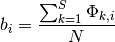
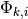
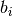
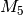
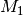

This section details some of the most common conceptual issues that can arise when interpreting rate shifts on phylogenetic trees. Many studies have attempted to identify *the* rate shifts within a given dataset. In the BAMM framework, there is no single set of independent rate shifts waiting to be identified. Rather, BAMM identifies configurations of rate shifts - sets of shifts that are sampled together - and enables us to compute relative probability of those configurations. Three shift configurations sampled with BAMM during simulation of the posterior are shown here.
The models of diversification and trait evolution implemented in BAMM are approximations. This is true for any statistical model that you can use to extract information from data. Let’s consider a few assumptions of the models implemented in BAMM. The model assumes that a relatively small number of discrete shift events can explain the data (sort of.... it is more that the marginal likelihood of any particular model is implicitly penalized by the addition of more parameters).It is possible that many shifts in evolutionary dynamics change in a discrete fashion (e.g., the classic “key innovation” scenario), but it is also possible that major changes in dynamics occur through a number of sequential changes in some general region of a tree (see figure below).

This is the cetacean phylogeny (try data(whales) to load this tree) included as an example dataset with BAMMtools, and you can see some examples of rate variation across this tree here. The tree on the left depicts the maximum shift credibility configuration identified by BAMM. This is simply the shift configuration sampled during simulation of the posterior with the highest marginal probability, analogous to the “maximum clade credibility tree” sampled during a Bayesian phylogenetic analysis (see below). The tree on the right gives an alternative interpretation of the results that would be invisible in the BAMM framework. Here, a relatively minor set of evolutionary shifts combine to produce - over several branches (red) - a major shift in evolutionary dynamics.
The point is that BAMM - and every other model that assumes discrete shifts in dynamics - can only detect discrete shifts in dynamics. Strictly speaking, this is less of a limitation for BAMM than other approaches. Because BAMM explicitly allows rates to vary through time after the point occurrence of a shift, the model does a reasonable job of tracking some types of continuous variation in evolutionary rates. In general, though, a spike in evolutionary rates inferred along a particular branch is fully consistent with the possibility that the “true” process involved a relatively continuous acceleration in rates that occurred over several branches. More generally, it is unlikely that such a continuous acceleration scenario over a relatively short period of time (e.g., tree on right) can even be detected from the sort of data we typically have available to us.
This is not a weakness per se of BAMM, and it applies to all other “macroevolutionary” scale modeling frameworks of which we are aware. However, recognizing the limitations of the discrete shift framework has a number of practical implications for interpreting patterns in data.
With most phylogenetic datasets, it is unlikely that you will be able to identify the specific branches on which rate shifts have occurred with extremely high confidence. More typically, you will be unable to exclude several different shift configurations that potentially account for a given pattern of phylogenetic branching or phenotypic diversity.
Currently, stepwise AIC and other model selection approaches are used to identify a single best set of rate shifts. We will single out some work that we have previously been involved with as an example of this type of approach. In Rabosky et al. (Proc. R. Soc. B, ###:###, 2007) and Alfaro et al. (PNAS ###:###, 2009), an information-theoretic model selection procedure is used to fit a set of models to phylogenetic data. Model complexity starts at 0, with the assumption that a single set of evolutionary rate parameters apply across an entire phylogeny. The algorithm then considers a more complex model, with two distinct evolutionary rate partitions across the tree. The actual likelihoods and AIC scores reported in these papers (and most subsequent papers that have cited them) tell us only about the relative fit of a model with X rate shifts relative to a model with Y rate shifts. There is typically no information in these analyses that provides the relative probability of different rate shift configurations. All we get is the maximum likelihood point estimate of the best-fit shift configuration, but we get no information regarding our confidence in that estimate relative to other shift configurations with an identical number of rate shifts.
Here’s a graphical illustration of the logical problems associated with this. Suppose you analyze a particular phylogeny and find that a model with 2 distinct rate regimes fits the data better than a single rate regime with probability 1.0. You report the location of your rate shift identified using the stepwise procedure as follows:

You go on to discuss this as strong evidence for a rate increase along the branch leading to clade A. You propose several potential key innovations that may have occurred along the branch leading to clade A that can potentially account for this discrepancy in species richness between clades A and B.
The problem here is that you have confounded statistical evidence for the number of rate shifts with statistical evidence for the location of the rate shifts. These are not the same. In fact, you have merely reported a single point estimate for a rate shift location that is consistent with your data. The true evidence for your rate shift locations might look more like this:

Here, you can see that - despite overall strong evidence for the occurrence of a rate shift somewhere in your tree - you can’t distinguish between several very different scenarios that have roughly equal probability. You can arrive at the observed disparity in diversity between clades A and B by (1) having a rate increase on the branch leading to clade A, or (2) a rate decrease on the branch leading to clade B. Unfortunately, there is nothing in your stepwise model-selection framework that provides this information. And these two scenarios lead to very different biological interpretations.
Simply speaking, reporting only the maximum likelihood shift location on a phylogenetic tree is exactly the same as publishing a single “best” estimate of a phylogeny with no measures of clade support. This would never be acceptable in the phylogenetic literature: at a minimum, we require bootstrap evidence, posterior probabilities, decay indices, or some other measure of the robustness of a particular inferred topology. However, in studying macroevolutionary dynamics, we frequently do exactly what we would never do in phylogenetic biology: we present point estimates with no probabilistic support measures, and we have mistaken support for a particular number of shifts for support bearing on their location.
Addressing this issue is one of the primary reasons that we created BAMM.
Yes.
We have encountered very few datasets where signal of a shift in rate dynamics along a particular branch is so strong that we can exclude alternative shift configurations with probability > 0.95.
Consider the analysis of whale diversification, which we’ve included as an example dataset in BAMMtools. We also use this dataset as an empirical example in the primary description of the BAMM model (Link here to arxiv/plos). The figure below shows reconstructed speciation rates through time during the whale radiation (red = fast, blue = slow) under BAMM. Overall, the model with the highest posterior probability had two rate dynamics, and a model with just a single rate dynamic had a posterior probability approach zero. The marginal (branch-specific) probabilities of a rate shift occurring on the 3 most likely branches are as follows:

Overall, we have very strong evidence for a shift in diversification dynamics somewhere near the origin of the dolphin clade, and the probability that at least one of the shifts illustrated above occurs is greater than 0.99. Although we are confident that a shift in dynamics has occurred, we cannot pin down a precise location of the shift. It would be incorrect to assert that the shift occurred on the branch with the highest marginal probability; it is almost as likely (p = 0.43) that the shift occurred on one of the ancestral branches immediately preceding the origin of the dolphin clade.
Marginal shift probabilities - the probability that a shift occurred on a given branch, ignoring everything else in the tree - are useful, but they are not independent of shifts occurring elsewhere on the tree. The marginal shift probabilities in the figure above cannot be treated as independent. In fact, the joint probability of a shift occurring on any two of the 3 principal branches (e.g., those with probs 0.05, 0.38, and 0.56) is approximately zero for all combinations. In other words, if you have a shift on one of these 3 branches for a given sample from the posterior, the conditional probability of a shift on any of the other branches leading to the dolphin clade is approximately zero.
Put simply: there is very strong (prob > 0.99) evidence for a shift in dynamics somewhere along the ancestral 3 branches leading to the core dolphin clade. But there is only evidence for one such shift. Almost every sample from the posterior has a shift on at least one of these 3 branches, but no sample has a shift on more than one of these branches.
Because of the non-independence of rate shift configurations, it doesn’t really make sense to show - in a single tree - all the rate shifts discovered by BAMM. A good (but imperfect) analogy for thinking about rate shift configurations and their potential non-independence comes from Bayesian phylogenetic analysis. Any given shift configuration is like a phylogenetic tree sampled from a posterior. Some trees in that posterior will be incompatible with others. Trying to show all the rate shifts at once on a single tree, or reporting them as though they are independent, is sort of like trying to show a phylogenetic tree where you show all recovered clades at the same time. Suppose in a Bayesian phylogenetic analysis of 3 clades (A, B, C) you recover, each with probability 0.5, the following topologies: (A,(B,C)) and ((A,B),C). These topologies are incompatible, and it doesn’t make sense to demand a single phylogenetic tree that represents all sampled clades within a single tree. The solution in phylogenetics is to collapse these incompatible topologies to a consensus tree with a polytomy. Showing all rate shifts recovered with BAMM on a single phylogenetic tree is a bit like showing a consensus phylogeny with polytomies: it isn’t the “true” tree, but it summarizes some of the total run information.
There are many types of information that can be extracted from a BAMM run. Here we describe several useful methods of summarizing and visualizing shift information from a BAMM analysis.
One of the most important ideas to grasp regarding BAMM is that BAMM simulates a posterior distribution of shift configurations on phylogenetic trees. Hence, every sample from a posterior simulated with BAMM may contain a potentially unique configuration of rate shifts. Here are 3 different shift configurations for the primates dataset included in BAMMtools. The fourth tree is a phylorate plot, showing instantaneous (marginal) phenotypic evolutionary rates at fine-grained set of points along the phylogeny. Note that the shift configurations are different for each sample from the posterior.

The marginal shift probabilities on individual branches across the tree are of considerable interest. As discussed above, there are some nuances to interpreting these, because the probability associated with any particular branch is not independent of other branches in the tree. From your bammdata object, you can easily compute the branch-specific marginal shift probabilities with BAMMtools:
library(BAMMtools)
data(whales, events.whales)
ed <- getEventData(whales, events.whales, burnin=0.1)
marg_probs <- marginalShiftProbsTree(ed)
The object marg_probs is a copy of your original phylogenetic tree, but where the branch lengths have been replaced by the branch-specific marginal shift probabilities. In other words, the length of a given branch is equal to the percentage of samples from the posterior that contain a rate shift on that particular branch.
You can convey this information in several possible ways. You can directly indicate marginal shift probabilities on a phylorate plot, as shown here. You can plot your marg_probs tree itself: the branches are scaled directly by probabilities, so a tree plotted in such a fashion conveys quite a bit of information (see Figure 9 from Rabosky 2014 for an example of such a plot). You can potentially color branches by their marginal shift probabilities, or you could add circles to each branch with a shift probability greater than some threshold.
But don’t get hung up on the fact that your shift probabilities are less than 0.95. Even very strongly supported rate heterogeneity will generally be associated with marginal shift probabilities < 0.95. As discussed here, you can (and often will) have exceptionally strong evidence for rate heterogeneity even if any given branch has marginal shift probabilities that do not appear particularly high. Marginal shift probabilities tell you very little about the probability of rate heterogeneity in your dataset. In principle, you could have high confidence that your data were shaped by a very large number of rate shifts, but at the same time find that no single branch has a marginal probability exceeding 0.10.
Marginal shift probabilities don’t tell you much about the most likely sets of shifts that generated your dataset. One possible estimate of the most likely shift configuration is the maximum credibility shift (MCS) configuration. This concept is analogous to the maximum clade credibility tree in a Bayesian phylogenetic analysis. The MCS configuration is a rate shift configuration that was actually sampled by BAMM and which is one estimate of the best overall configuration. Formally, the MCS configuration is estimated in several steps. First, we compute the marginal shift probabilities on each branch of the tree. For the ith branch, denote this probability as pi. For each sample shift configuration from the posterior, we then compute the product of the observed set of shifts, using these marginal probabilities. These are then weighted by the posterior probability of sample k (as defined by the number of processes), or P(k). The shift credibility score C for the kth sample is computed as:
where Ii,k is an indicator variable taking a value of 1 if a shift occurs on branch i for sample k, and 0 if no shift occurs in the sample. In BAMMtools, you can easily estimate the MSC configuration:
> library(BAMMtools)
> data(primates, events.primates)
> ed <- getEventData(primates, events.primates, burnin=0.1)
> msc_tree <- maximumShiftCredibility(ed)
Here we’ll simply plot the MSC shift configuration on a boring (non-phylorate) version of the primate tree:
The MSC tree has a total of two shifts (red circles). Interestingly, this is not the tree we might have expected to be the MSC tree. For the primates data, a model with 4 shifts has the highest posterior probability, something we could have checked with:
> # Assuming ed is still the primate bammdata object:
> summary(ed)
It is possible that multiple shift configurations will have an identical credibility score (the function maximumShiftCredibility will identify these).
For publication, rather than (or in addition to) showing all shifts (or marginal shift probabilities), consider plotting the locations of shifts for the MSC tree, either on the phylorate plot or another plotted tree object.
The cumulative shift shift probability tree shows the probability that a given node has evolutionary rate dynamics that are decoupled from the root process. For a given node to be decoupled from the “background” evolutionary dynamic, a rate shift must occur somewhere on the path between the node and the root of the tree. Branches with a cumulative shift probability of 1.0 imply that every sample in the posterior shows at least one rate shift between the focal branch and the root of the tree, leading to evolutionary dynamics that are decoupled from the background process.
Consider the whale diversification analysis. Even though we have relatively low confidence of the precise branch on which a shift may have occurred, we have high confidence that a shift occurred on one of the ancestral branches leading to the dolphin clade. Formally, the cumulative shift probability for branch bi is computed as:

where  is an indicator variable that takes a value of 1 if a shift occurs somewhere on the path between branch i and the root of the tree (0 otherwise). The cumulative shift probability on a particular branch  might thus be extremely high even if shifts are unlikely to have occurred on branch itself. Here we will compute the marginal shift probability tree using the cumulativeShiftProbsTree function from BAMMtools.
Here is another view of the whales analysis where we will use color to show all branches that are “strongly” associated (p > 0.95) with diversification dynamics that are decoupled from those at the root of the tree.

It is incorrect to assume that you need “significant” (p > 0.95) marginal shift probabilities or cumulative shift probabilities to demonstrate significant rate heterogeneity in your dataset. The evidence for rate heterogeneity comes from considering the posterior probabilities on the number of shifts, or - even better - the Bayes factor evidence in favor of model with k shifts ( ) relative to a model with 0 shifts (
) relative to a model with 0 shifts ( ).
).
In the toy example above, we had evidence for rate heterogeneity in the dataset (with posterior probability 1.0), yet neither the marginal shift probabilities (0.49, 0.51) nor the cumulative shift probabilities (same as marginals for this example) would be “significant”. This is a most important point: you can have massive evidence for rate heterogeneity in your dataset, but both your marginal and cumulative shift probabilities will be a function of the frequency distribution of distinct alternative shift configurations.
The primate body mass example dataset is a good example of this. Here, we have strong evidence against a single evolutionary rate regime. In fact, the Bayes factor evidence favoring a model with 5 rate regimes () versus a model with 0 rate regimes () exceeds 60,000. For versus , this ratio exceeds 8,000. Numbers like these imply that it isn’t even worth considering simple models of body size evolution (e.g., one or two-rate Brownian motion models).
{kind=link}